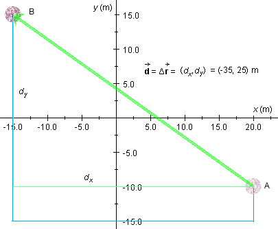

of the ball in green. The scalar components
dx and dy of the displacement are
shown in green as well.
of the ball in green. The scalar components
dx and dy of the displacement are
shown in green as well.
The example treated here is based on Exercise 5 from the Activities under Related Items in the bottom left corner. Have a look at this Exercise before you continue.
Exercise 5 deals with a ball that is being moved from a point A to
a point B along three successive straight-line path segments. The
diagram below illustrates the situation. It shows the path taken by
the ball in blue and the displacement vector of the ball in green. The scalar components
dx and dy of the displacement are
shown in green as well.
The diagram is based on the applet on Page 2. For instructions on how to use the applet go to Applet Help on the applet's Help menu.

The distance traveled by the ball, s, is the length of the blue path taken by the ball. The value of s is obtained as follows.
The path consists of three straight-line segments:
Thus,
s = 5 + 35 + 35 = 75 m.
The distance traveled by the ball must be distinguished from the
(straight-line) distance between the ball's initial and final
positions A and B. The latter is equal to the magnitude d of
the ball's displacement . What is the
value of d in this case?
The components dx and dy of
and the vector form a right-angle triangle, with as the hypotenuse. Therefore, the magnitude
d of is given by the
Pythagorean theorem,
Note that d < s. The straight-line distance between two points is the shortest connection between the points.